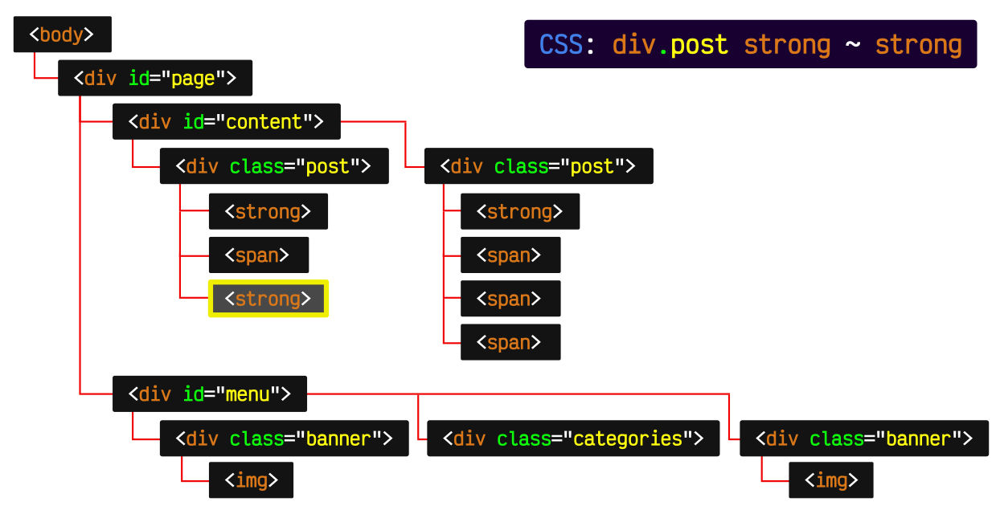

Introducción a CSS: Dominando el lenguaje de las hojas de estilo
CSS (Cascading Style Sheets)es un lenguaje fundamentan para el desarrolo
web, utilizando para dar estilo a las páginas web y controlar su apariencia visual. Si bien HTML define la
estructura y contenido de una página, CSS le da vida y la hace atractiva, funcional y adaptable a diferentes
dispositivos.
¿Qué beneficios aporta usar CSS?
Incorporar CSS en tus proyectos web trae consigo múltiples ventajas:
Mejorar la apariencia visual: CSS te permite controlar colores, fuentes, tamaños,
márgenes, bordes, posicionamiento y más, creando páginas web visualmente atractivas y consistentes.
Facilita la mantenibilidad: Al separar el estilo del contenido, CSS te permite
modificar la apariencia de tu sitio web sin afectar su estructura, facilitando su mantenimiento a largo plazo.
Adaptabilidad a diferentes dispositivos: CSS te ofrece herramientas para crear
diseños web responsivos que se ajustan automáticamente a diferentes tamaños de pantalla, desde computadoras de
escritorio hasta smartphones y tablets.
Mejora la experiencia del usuario: Una página web con un diseño atractivo e
intuitivo mejora la experiencia del usuario, lo que aumenta la satisfacción y el tiempo de permanencia en el
sitio.
Estructura básica de una hoja de estilos CSS
La imagen muestra la estructura
básica de una hoja de estilos CSS, incluyendo declaraciones de selectores, propiedades y valores.
Una hoja de estilos CSS es un archivo con la extensión ".css" que contiene reglas que definen cómo
se deben mostrar los elemntos HTML en una página web. La estructura básica de una hoja de estilos CSS incluye:
Selectores: Identifican los elementos HTML a los que se aplicarán las reglas de
estilo.
Propiedades: Definen las características visuales que se aplicarán a los
elementos seleccionados, como colores, fuentes, tamaños márgenes, etc.
Valores: Especifican los valores concretos de las propiedades, como colores,
hexadecimales, tamaños de fuente en píxeles, valores de margen en porcentajes, etc.
Ejemplo de una regla CSS básica:
h1 {
color: #333;
font-size: 24px;
margin: 20px 0;
}
Esta regla CSS selecciona todos los elementos HTML con la
etiqueta "< h1>" (Encabezados de primer nivel) y les aplica las siguientes:
Color: Establece el color del texto en negro(#333).
Font-size: Establece el tamaño de la fuente en 24 píxeles.
margin: Añade un margen superior e inferior de 20 píxeles.
Selectores CSS:

La imagen muestra ejemplos de
diferentes tipos de selectores CSS, como selectores por tipo de elemento, selectores por ID, selectores por
clase, selectores por atributo, etc.
Los selectores CSS permiten identificar de forma precisa
los elementos HTML a los que se aplicarán las reglas de estilo. Existen diferentes tipos de selectores, entre
los que destacan:
El selector CSS combinado "div#contenedor p.parrafo" selecciona
todos los elementos "< p>" con la clase "parrafo" que se encuentran dentro de un elemento "< div>" con el ID
"contenedor".
#contenedor: Reduce la selección a los elementos "< div>" que tienen el ID
"contenedor".
p: Reduce aún más la selección a los elementos "< p>" que se encuentran dentro del
elemento "< div>" con ID "contenedor".
.parrafo: Finalmente, selecciona solo los elementos "< p>" que tienen la clase
"parrafo".
Propiedades CSS básicas:
Las propiedades CSS definen las características visuales de los
elementos HTML, como el color, el tamaño de la fuente, el margen, el relleno, el borde y el posicionamiento. Se
utilizan en conjunto con los selectores CSS para controlar la apariencia de la página web.
Propiedades CSS comunes:
color: Establece el color del texto de un elemento. Ejemplo: "color:#333", establecce
el color del texto en negro.
font-family: Establece la familia de fuentes para el texto de un elemento. Ejemplo:
font-family: Arial, sans-serif; establece la familia de fuentes en Arial o una fuente sans-serif.
font-size: Establece el tamaño de la fuente para el texto de un elemento. Ejemplo:
font-size: 16px; establece el tamaño de la fuente en 16 píxeles.
font-weight: Establece el grosor de la fuente para el texto de un elemento. Ejemplo:
font-weight: bold; establece el texto en negrita.
margin: Establece el espacio alrededor del borde exterior de un elemento. Ejemplo:
margin: 20px 0; establece un margen superior e inferior de 20 píxeles.
padding: Establece el estilo, ancho y color del borde de un elemento. Ejemplo: border:
1px solid #ccc; establece un borde sólido de 1 píxel con color gris claro.
width: Establece el ancho de un elemento. Ejemplo: width: 50%; establece el ancho del
elemento al 50% del contenedor.
height: Establece la altura de un elemento. Ejemplo: height: 300px; establece la altura
del elemento en 300 píxeles.
position: Establece la posición de un elemento en el documento HTML. Ejemplo: position:
absolute; hace que el elemento se posicione de forma absoluta en relación con su contenedor.
Ejemplo de código:
/* Selecciona todos los párrafos HTML */
p {
color: #333;
font-family: Arial, sans-serif;
font-size: 16px;
line-height: 1.5;
}
/* Selecciona el elemento HTML con el ID "hero" */
#hero {
background-color: #F0F0F0;
padding: 20px;
text-align: center;
}
/* Selecciona todos los elementos HTML con la clase "boton" */
.boton {
background-color: #007BFF;
color: white;
padding: 10px 20px;
border: none;
cursor: pointer;
}
/* Selecciona todos los elementos HTML con el atributo data-role="main" */
[data-role="main"] {
width: 80%;
margin: 0 auto;
}